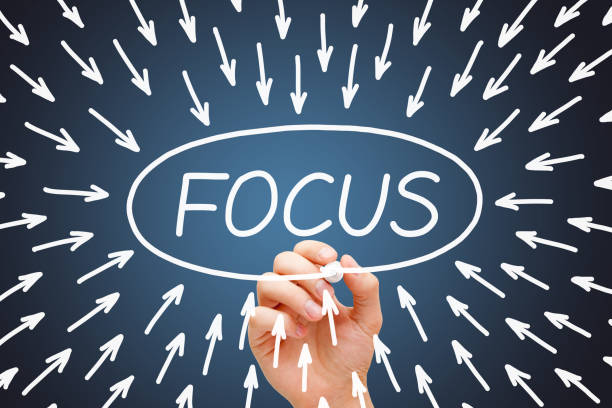
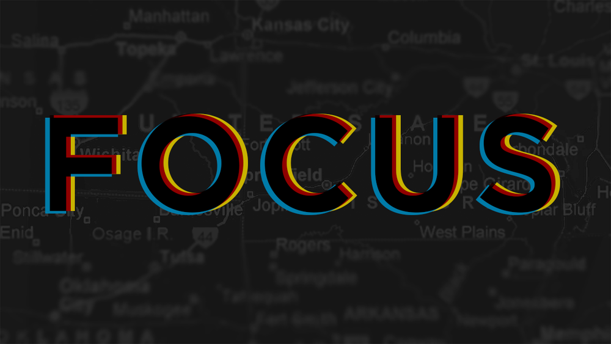

GET WELL
Need Help Staying Focused? Try These 5 Tips+1bouns tip(my best own tip)

If there's one thing we could all probably use a lot more of, it’s the ability to focus. But telling yourself to stay focused on a task, especially a mundane one, is often a lot easier said than done.
The good news? There are several techniques that can help you zone in on the task in front of you. If you need help staying focused, try one — or all 10 — of these tips.

1. Get rid of distractions
First things first: You need to eliminate distractions. While you can’t do away with everything, you can make an effort to reduce or get rid of as many distractions as possible.
Start with the simple things like:
- moving to a quiet area
- turning off notifications on your phone or turning your phone off altogether
- closing the door to your office
- telling those around you not to distract you for a period of time
- closing out of programs or apps that aren’t essential on your computer
2. Coffee in small doses
Drinking coffee, or other caffeinated beverages, in small doses may have a positive impact on your ability to focus, according to a 2010 studyTrusted Source.
The key to taking advantage of caffeine’s cognitive-enhancing properties is to consume it in moderation. If you drink too much of it, you may end up feeling anxious or nervous, which generally reduces your ability to stay focused.
3. Practice the Pomodoro technique
Staying focused helps you get more done in less time. While that sounds simple enough, it’s not always easy to put into practice. So, the next time you’re wrestling with your attention span, try the Pomodoro technique.
This timing method helps you train your brain to stay on task for short periods of time. Here’s how it works:
- Set your timer for 25 minutes and get to work.
- When you the buzzer sounds, take a 5-minute break.
- Then, set the timer again and get back to work.
- Once you’ve done four rounds of this, you can take a longer break, approximately 20 to 30 minutes.
4. Put a lock on social media
If your idea of a break from work is checking Facebook or Instagram every 5 minutes, you may want to consider an app that blocks social media.
There are several apps that work for your phone, tablet, or computer. In addition to social media, some of these distraction-busting programs also allow you to block online games, as well as apps and sites like YouTube, Netflix, Amazon, Twitter, text messages, and even emails.
Some of the most popular social media blockers include Freedom, AppBlock, FocusMe, and Focus.
5. Fuel your body
We all know what happens when “hanger” strikes. This dreaded combination of hunger and anger is a major focus fail.
So, to keep your brain focused, your energy levels up, and your emotions on an even keel, make sure you don’t delay or skip meals.
Try to balance lean protein, complex carbohydrates, and healthy fats to stay fueled. Snack on fresh fruit, veggies, nuts, or seeds if you get hungry between meals, and be sure to keep yourself hydrated with plenty of water.
And, for an extra boost, Harvard Medical School says to include a few of these “best brain foods” in your day:
- green, leafy vegetables like kale, spinach, and broccoli
- fatty fish such as salmon
- berries, like blueberries, strawberries, raspberries, or blackberries
- walnuts
- tea and coffee for the caffeine, in moderation
1(BONUS POINT). MY LIFE TIP
IF YOU LIVE IN INDIA SPECIALLY DELHI AND YOU ARE A STUDENT AND WANT YOU DEFEAT YOUR FRIENDS IN COMPETITON SO CLICK ON THIS GIVEN BUTTON
CLICK ON ME
ALL COPYRIGHT RESERVED 1995-2025@AYUSH-DEVLOPER